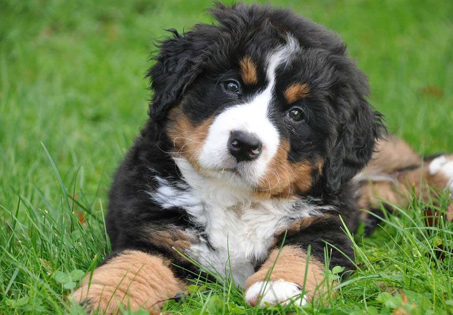
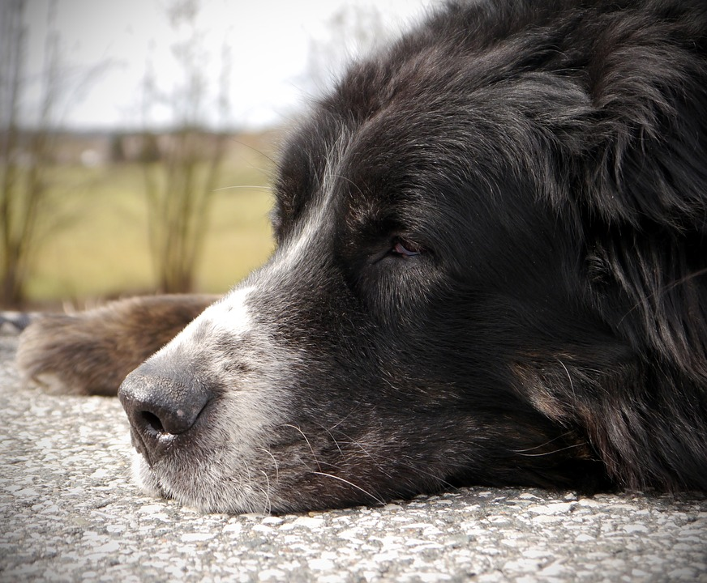

Are You Prepared To Adopt?
- Adopting Puppies
With puppies, you might have to factor in the cost of vaccination, spaying and neutering, training and socialization classes, and new equipment like leashes, bowls, toys, and more.
 - Adopting Adult Dogs
Adult dogs are usually up-to-date on vaccines and already spayed or neutered by their shelter. They tend to have a grasp on basic commands and may have started some sort of behavior training.

- Adopting Senior Dogs
Senior dogs tend to be more relaxed. While their exercise needs may not be as extreme as puppies or adult dogs, they do sometimes come with health issues that must be addressed.
